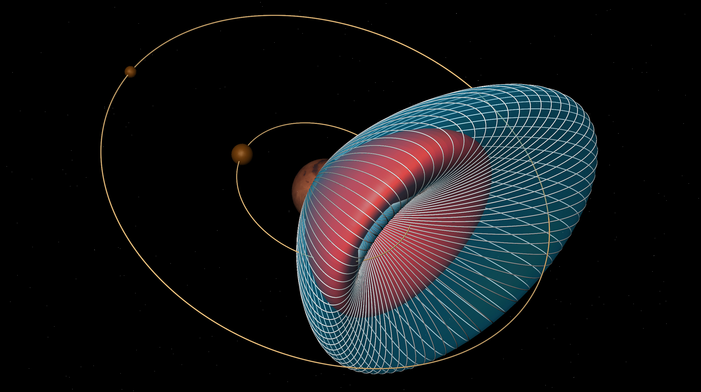

◀
The Mars System
▶

Mars, the fourth planet from the Sun, has long captured human imagination and scientific interest. Among its most fascinating features are its two moons, Phobos and Deimos. Unlike the Earth's moon, which is a large and stabilizing presence, Mars' moons are small and irregularly shaped, suggesting they may be captured asteroids. Phobos, the larger and closer of the two, orbits Mars so closely that it rises and sets twice within a single Martian day. Deimos, smaller and further away, takes a more leisurely path around the planet. These moons are more than mere celestial bodies; they are windows into the Martian past, providing clues about the planet’s formation and the dynamic processes that have shaped the solar system. Understanding these moons is not only critical for comprehending Mars' history but also for future missions, as they could serve as bases for exploring Mars and beyond.